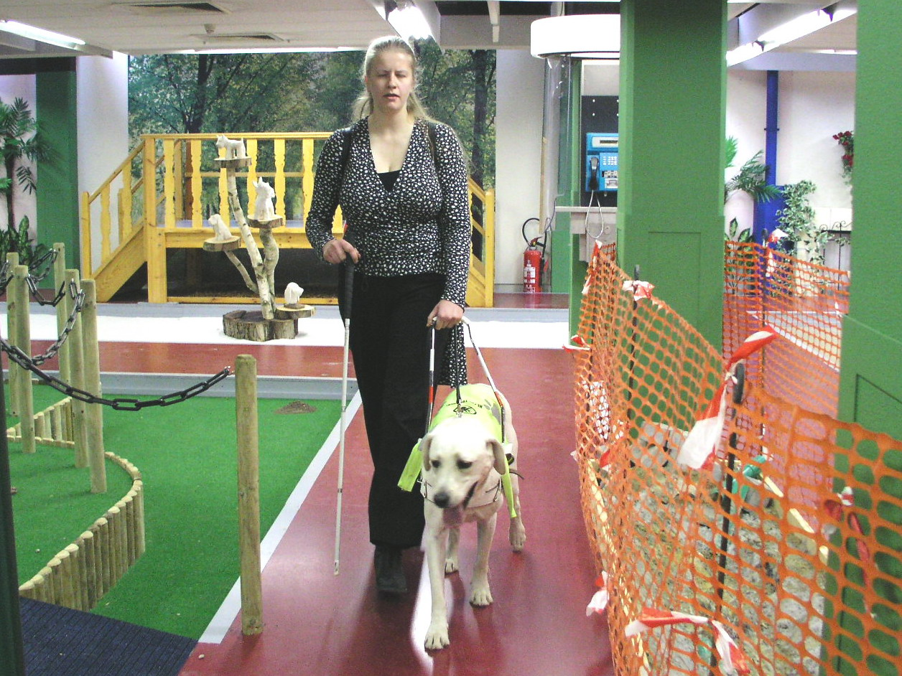
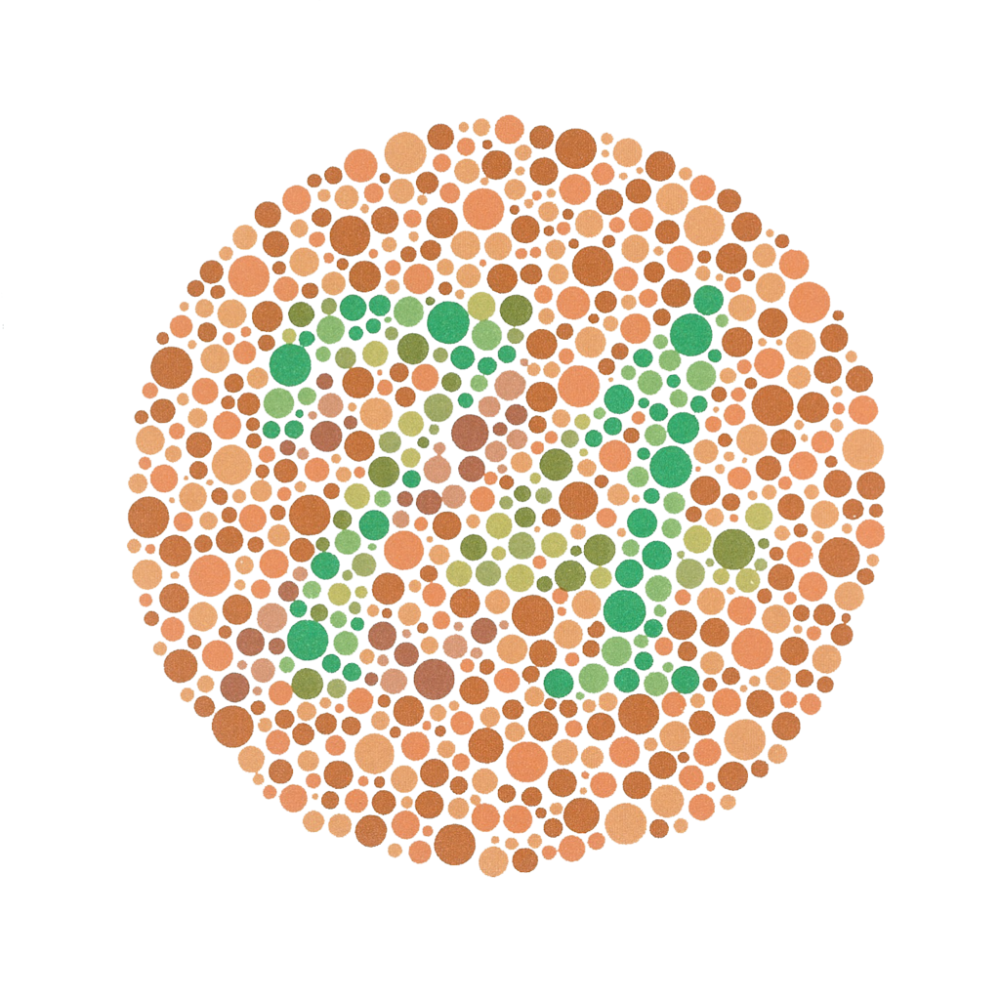
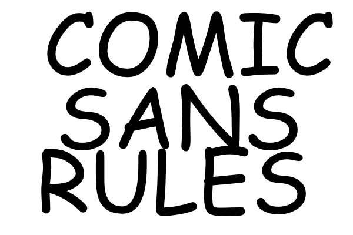
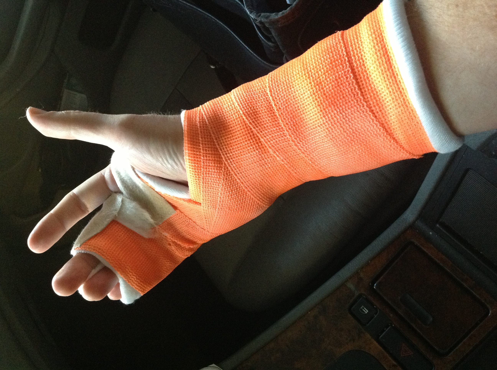
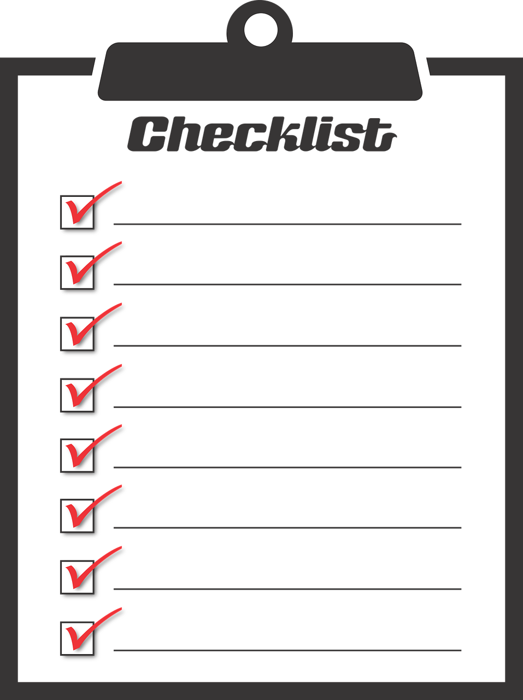
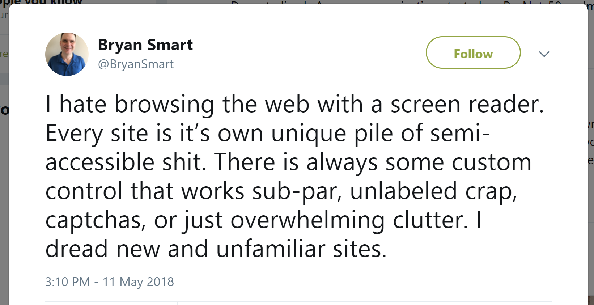

Lunch & Learn About Accessibility
Table of Contents
1 Introduction
2 Why Me, Leading This Session?

- more usable/accessible tools and apps better for everyone
3 Common Misconceptions
The accessibility is about blind people and being able to make booking through a screen reader.
While in reality:
Accessibility in Web development means enabling as many people as possible to use Web sites, even when those people's abilities are limited in some way.
Different types disabilities and categorization Visible and invisible. Physical, Cognitive, Sensory…
Permanent
Blind

Wheelchair users
but also Colorblindness

or Dyslexia

and more..
Temporary

Broken limbs, pregnancy (no offence) etc.
Situational
Are you sure that your cognitive and motoric capabilities are same at 3 A.M. morning on Saturday as on Monday 10 A.M. at work after a cup of coffee?
It is expensive and hard to do.
Well, this is true when you take accessibility into consideration only in the final phase of a project(s) or try to retrofit to an existing application.
It is a frontend thing.
or
To make application valid against some document or checkbox is enough.

Explanation:
Checklists and automated tools are usefull and recommended, but can not replace testing and experience of real users.
How not to do it:
We wish to include on our website nice picture.
<img src="xxx.png" />
And you heard that to make it accessible we need to add "alt" attribute.
<img src="xxx.png" alt="Image" />
The correct way:
<img src="xxx.png" alt="Woman on the beach excercising yoga" />
Add an alternative description of the information displayed by the picture.
Accessibility is about the details that you may not notice or ever use but are critical to many users.
4 Why Should (We / You) Care?

- Ethical reasons and because it is the right thing to do
- Market advantage
- Innovation
- Law and legal requirements
5 Implementation Patterns or Live Examples
6 Conclusion
"100% accessibility" is an unobtainable ideal — you will always come across some kind of edge case that results in a certain user finding certain content difficult to use — but you should do as much as you can.
https://developer.mozilla.org/en-US/docs/Learn/Accessibility/What_is_accessibility
7 Next Steps Resources
Free course on Udacity about accessibility
https://eu.udacity.com/course/web-accessibility--ud891
Web Content Accessibility Guidelines
https://www.w3.org/WAI/intro/wcag
Accessible Rich Internet Applications (WAI-ARIA)
https://www.w3.org/TR/wai-aria/
Pa11y is your automated accessibility testing pal. It runs HTML CodeSniffer from the command line for programmatic accessibility reporting.
GDS Accessibility blog
https://accessibility.blog.gov.uk/